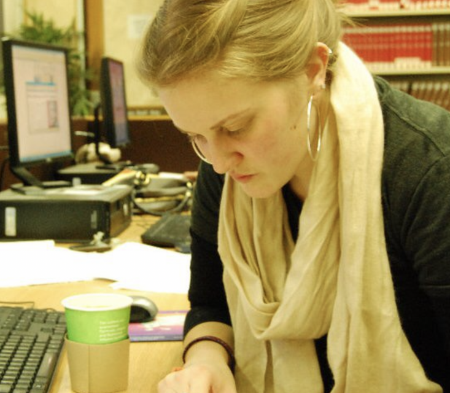

Web Development
Wordpress
The website I currently work with is a Wordpress site. I sometimes write HTML on this, or if I use the Gutenburg Editor, I'll often switch over to see the HTML so I can learn more.
Here are some of the pages I've worked on:
Work Experience
Migrant Rights
I work for the Migrant Rights Centre Ireland. Although I currently work on tech infrastructure, my previous role involved policy work and project management.
I have two degrees - both in politics and languages - that have helped me gain wider understanding of the world, critical analysis, and attention to detail; attributes which I hope will help me become a better Front End Web Developer
Interests
Current Hobbies
I love dancing, swimming in the sea, and eating food!
I recently moved from Belfast to Vancouver and am really enjoying going hiking and exploring the beautiful forests here.
Kayaking was my top favourite weekly actviity in Ireland, so I'm hoping I'll get to try that here soon!